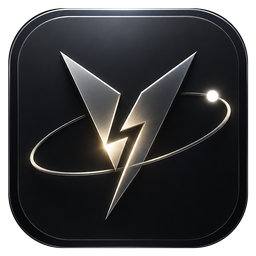

把分散的资料，变成清晰的下一步。
带入已有资料，整理计划，随新的想法继续修改。示例中的活动方案已经调整，仍需确认的场地许可也清楚保留。

V8 Agent OS为有想法的你而来
一个新产品，一份深入的研究，一次酝酿已久的创作。把资料、模型和工具带进同一个项目，打开成果，提出修改，再接着向前。V8 让你的想法，有一条走到作品的路。
01 / 从想法出发
把目标带进来，让研究、开发与创作接上彼此。每一步都有去处，每一份成果都能继续打磨。
带入已有资料，整理计划，随新的想法继续修改。示例中的活动方案已经调整，仍需确认的场地许可也清楚保留。
从项目资料推进到网页，在同一个工作台检查文件与实际预览。这个活动页仍是演示草稿，你可以继续审阅和打磨。
连接参考资料与创作步骤，保留输出版本，随时回看和继续修改。图中是画布工作过程的演示，生成内容仅作内部配色参考。
CREATIVE DIRECTION / 让构想更具体
为每个对象指定参考，安排位置与运动，再决定镜头看向哪里。把脑海里的构图，变成可以检查、调整和继续制作的场景。
把参考图绑定到具体对象，说明正面、细节等用途。同一张图可以服务不同对象，每份参考的作用都能单独查看。
沿时间轴调整相机位置、目标和视野角度，预览镜头变化。保存场景后回到动作卡，由你决定何时运行。
几何预览用于表达布局与镜头，参考素材用于引导生成；最终画面取决于所选模型与配置。
产品影片即将上线
看见一个目标，如何连接研究、开发与创作。
V8 AGENT OS / THE FILM02 / 以你为中心
V8 理解你想完成什么，直接行动，或在需要时协同专业能力。研究、代码与创意，都为同一个目标服务。
项目背景、资料与产物留在工作空间。带着已经走过的路继续前进，让下一次创作有更好的起点。
选择适合自己的模型，连接常用工具，按需要扩展能力。查看过程、补充方向，把关键决定留在自己手里。
MEMORY GALAXY / 让经验留下来
把项目记忆与知识关系，放到一张可以探索的星图里。从全局看脉络，进入一个项目看细节，让已有积累更容易被找到。
把不同项目与全局知识放在同一个视野里，先看清它们的位置，再选择要深入的方向。
聚焦一个项目，查看记忆节点与连接。把注意力放回当前的工作，需要时再回到整体视野。
查看全局共享知识，也能回到各项目记忆。分清通用积累与当前项目的背景，在深色视图中继续探索。
STAY WITH THE WORK
工作需要持续，也需要掌控。回看输出，跟进执行；服务暂时不可用时，在原任务查看原因、重新编辑，再决定是否发送。
图中的重复字符用于检验输出显示与退出状态，不代表真实项目内容或通用性能指标。
画面展示已保存的失败记录与恢复入口；是否重新发送由你决定，不表示模型已成功回复。
03 / 灵感，无需等你回到桌前
让电脑承担工作，在配对后的手机上跟进同一任务、补充素材、回应确认。先认准正在连接的电脑，再把新的想法带回原来的项目。
本机直接使用，手机配对接入。关闭控制中心后，工作引擎仍可提供连接；请保持电脑服务运行，并确保手机能够访问。
Android Phone Preview · 图中展示连接管理；跨端任务能力以实际连接与配置为准。
先配置手机可达的 HTTPS 地址，再生成配对信息。地址与证书仍需在你的网络中可用。
OPEN BY DESIGN
从模型到工具，从专业技能到日常应用。V8 以开放的连接方式，让你的工作系统有继续生长的空间。
扩展能力依实际模型、插件安装与配置而定。
选择模型，为项目安排空间，再连接需要的工具。把每一种能力，放到适合自己的位置。
在模型中心管理不同连接，查看模型与连接状态，为自己的工作选一个合适的起点。
为项目选择本机文件夹，管理资料与工作区规则。后续的修改，都围绕这个项目继续展开。
查看已安装的扩展，分清本地功能和需要配置的云端服务，让工具按实际需要进入工作。
控制台实拍 · 部分信息已遮盖；可用能力依实际连接与配置而定。
YOUR NEXT CHAPTER
把 V8 带到自己的电脑，开始第一个真实项目。
Windows · macOS · Linux
同一发布页提供 Android Phone、Linux x64 Server 与独立 TUI 包。按你使用的设备与环境选择。
当前为未签名 Preview，安装时可能需要系统确认。使用前需配置模型；第三方模型与服务可能单独收费。请按平台选择发布页中的安装包。
开始之前
适合希望用 AI 推进真实项目的独立开发者、创作者与小团队。你可以从一个明确的研究、开发或创作任务开始，逐步建立自己的工作方式。
V8 是运行在 Windows、macOS 或 Linux 上的桌面 AI 工作系统。安装应用即可开始配置，不需要替换电脑原有的操作系统。
项目工作以你的电脑为中心。调用云端模型、搜索或创作服务时，相关数据会发送至你配置的服务；实际网络与数据流向取决于所选能力。本地优先不代表所有任务都能离线完成。
准备一台受支持的电脑、一个用于项目的文件夹，以及可用的模型连接。V8 源码采用 MIT 许可；模型 API 和第三方服务的费用由相应提供方收取，软件开源不包含免费模型额度。快速入门会带你完成首次配置。
Phone 是配对后的远程交互入口。电脑端需要保持运行，手机需要能够连接到它。你可以跟进任务、补充资料和处理确认；手机不替代桌面端运行系统。
可以向已信任设备分发模型预算、温度与内建角色映射。先查看各设备差异，确认后应用，再逐台核对结果。密钥、授权凭据和工作区路径不会随配置复制。
Android 本机执行器是默认关闭的实验功能，需要单独绑定控制主机、限定应用范围并授予系统权限。可在本机停止或撤销绑定；切换聊天连接不会自动更换控制主机。它不代表任意应用或 iOS 都可被控制。
当前发布仍为 Preview，包含桌面、Android Phone、Linux x64 Server 与独立 TUI 包。站内截图保留各自采集来源；Android 连接图来自真机验证应用，不代表正式 APK 安装验收。下载区链接指向已核实的发布版本。